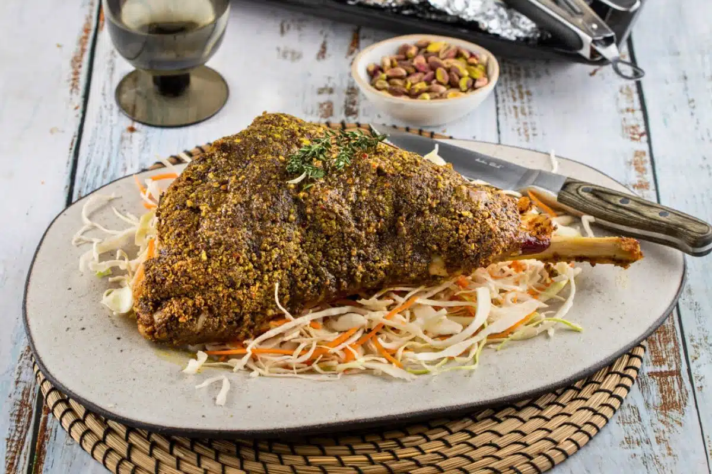

Pistachio & Herb Crusted Leg of Lamb

Ingredients
- 1 leg of lamb
- 200 g pistachios
- 2 tbsp rosemary only the leaves, finely chopped
- 2 tbsp dry breadcrumbs
- 2 tbsp mild mustard
- 1 tbsp thyme only the leaves, finely chopped
- 1 tsp granulated sugar
- ½ tsp pepper flakes (or chili flakes)
- ½ tsp smoked paprika
- salt
- pepper
To serve:
- salad (optional)
Instructions
- Preheat the oven to 180° C/356° F, fan-assisted.
- In a food processor, place the pistachios, rosemary, sugar, pepper flakes, smoked paprika, thyme and
breadcrumbs. Process until finely ground.
- Place the leg of lamb on a clean work surface. Using a sharp knife, score both sides of the lamb with small
diamond shapes
- Brush with mustard and season with salt and pepper. Spread the pistachio mix evenly over the whole leg of
lamb and transfer to a roasting pan lined with parchment paper. Cover the pan with parchment paper and then
with aluminum foil.
- Roast for 2-2 ½ hours, until golden and crunchy.
- When ready, remove from oven and serve with a side of salad or mashed potatoes.
Notes
Chef's tip: Do not add any water or other liquid when roasting as the lamb is wrapped in
parchment and will cook perfectly in its own juices.
Back